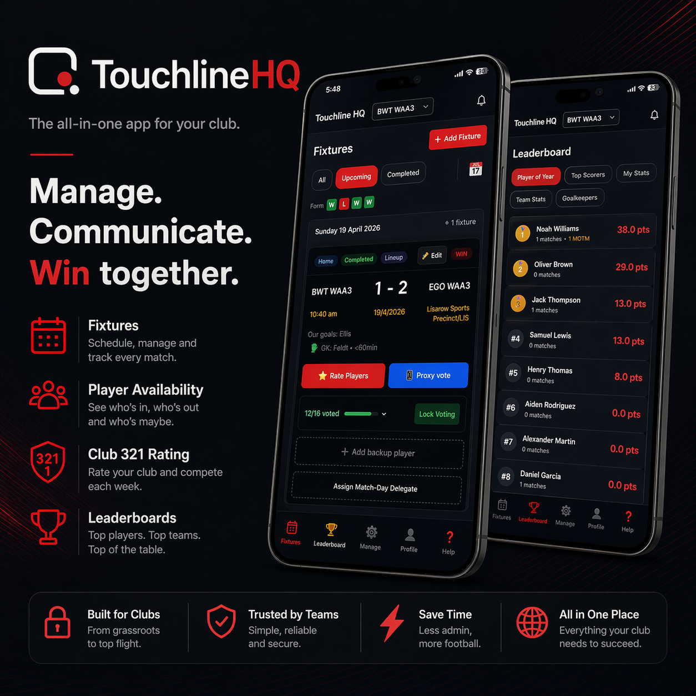

Web App
Touchline HQ
The all-in-one app for your club

Football management, simplified
Managing a football team shouldn't require a laptop, a spreadsheet, and three different group chats. Touchline HQ puts everything in one place - fixtures, availability, player ratings, leaderboards, and lineup builder - accessible from your phone, on the touchline, where you actually need it.
Built for grassroots clubs and their managers. Simple enough for players to use after a match, powerful enough to run an entire club's season.
Everything your club needs
- Fixture management - Schedule matches, record scores, track goalscorers and the goalkeeper for every game
- Player availability - Players mark themselves in or out before every match. See at a glance who's available and who's not
- 3-2-1 Player Ratings - After every game, the squad votes on their top three performers. 3 points, 2 points, 1 point - democratic, transparent, and a lot of fun
- Season Leaderboards - Player of the Year rankings, Top Scorers, Team Stats, and individual My Stats - all updated automatically
- Lineup Builder - Drag players into formation, assign captains, add bench players, and share the lineup image directly to your group chat
- Multi-team support - Club plans cover multiple teams. Manage Men's, Women's, and Youth grades all from one subscription
- Proxy voting - Managers can submit ratings on behalf of players who couldn't vote before the deadline
- Custom club branding - Upload your logo and set club colours to make the app feel like yours
- Data import & export - Bulk upload squads, fixtures, and results via CSV, and export full season data at any time
Simple season pricing
One subscription covers your entire club. Players never pay.
- Single Team - $49/season - 1 team, all features
- Club - $159/season - Up to 8 teams, custom branding, manager invites
- Pro - $449/season - Up to 25 teams, priority support
Ready to get your club organised?
Try Touchline HQ free for your first season. No credit card required to get started.
Launch Touchline HQ